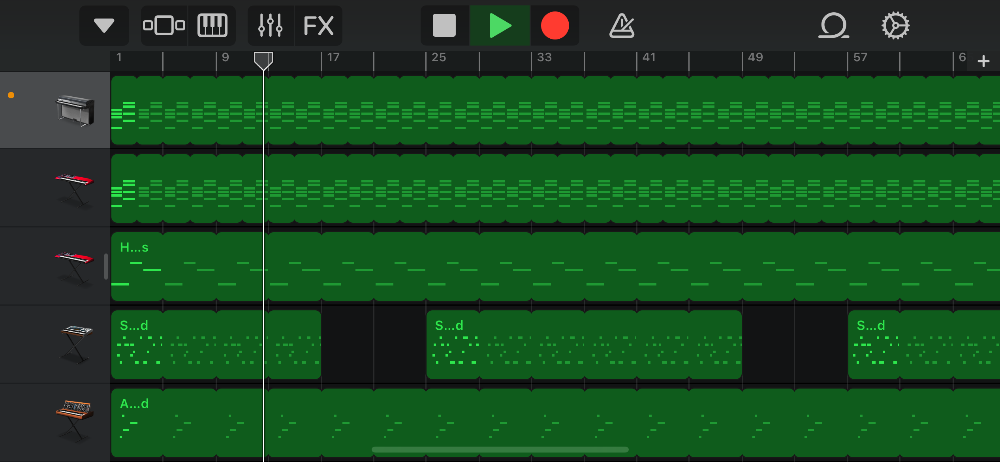

I enjoy making beats in my free time. My preferred DAW (digital audio work station) is GarageBand for iOS (pictured below). While I am open to trying out new genres, I typically make beats within the contemporary hip-hop realm, spanning hip-hop subgenres such as trap, drill, and pluggnb. I started making beats in 2021 after learning a few basics from the internet and continued to grow my skillset from there. I enjoy making beats as it is a fun creative outlet as well as a means of engaging with music from another angle as a creator.
Hobbies and Interests: